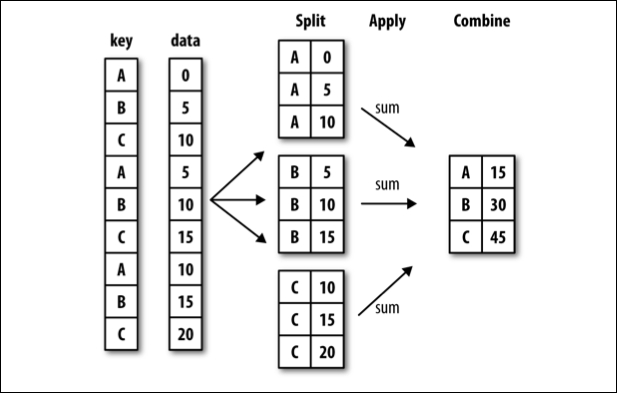

import seaborn as sns
import pandas as pd
import numpy as np03. Data Analysis with Jupyter and Python
Load Libraries
You can already interact with the data files in your file directory with using the pandas.read_csv function:
exploration_times = pd.read_csv("exploration_times.csv") # have pandas read the csv file "exploration_times.csv" and store the data into the variable 'exploration_times'exploration_times # display the data| WT | CCR5 KO | |
|---|---|---|
| 0 | 3.478549 | 4.983642 |
| 1 | 2.234100 | 3.502187 |
| 2 | 1.724468 | 2.469726 |
| 3 | 1.723056 | 2.210396 |
| 4 | 0.965881 | 2.508039 |
| 5 | 0.726249 | 1.465072 |
| 6 | 0.490557 | 1.202951 |
| 7 | 0.217963 | 1.474133 |
| 8 | 0.479953 | 0.976419 |
| 9 | -0.053350 | 0.752514 |
| 10 | 0.505003 | 0.742008 |
| 11 | 0.256178 | 1.004063 |
Loading data
Let’s load in an example dataset. We shall load the iris flower dataset.
The Iris flower data set or Fisher’s Iris data set is a multivariate data set introduced by the British statistician and biologist Ronald Fisher in 1936. It is sometimes called Anderson’s Iris data set because Edgar Anderson collected the data to quantify the morphologic variation of Iris flowers of three related species. Two of the three species were collected in the Gaspé Peninsula “all from the same pasture, and picked on the same day and measured at the same time by the same person with the same apparatus”.
The data set consists of 50 samples from each of three species of Iris (iris setosa, iris virginica and iris versicolor). Four features were measured from each sample: the length and the width of the sepals and petals, in centimeters.


# Read iris data from the sheet with pandas
iris = pd.read_csv("https://www.bitly.com/dukenusda")
## Or, since we have a copy of the file in the downloaded directory:
# iris = pd.read_csv('iris.csv')You have created a new object known as a pandas DataFrame, with the contents of the CSV. Think of it as a spreadsheet, but with a lot more useful features for data analysis. It has several methods we can use to handle, analyse, and plot the data.
We can peak at the data using the .head() method.
iris.head() # Gives us the first 5 rows of the dataframe.
# iris.head(10) # Gives us the first 5 rows of the dataframe.| sepal_length | sepal_width | petal_length | petal_width | species | |
|---|---|---|---|---|---|
| 0 | 5.1 | 3.5 | 1.4 | 0.2 | setosa |
| 1 | 4.9 | 3.0 | 1.4 | 0.2 | setosa |
| 2 | 4.7 | 3.2 | 1.3 | 0.2 | setosa |
| 3 | 4.6 | 3.1 | 1.5 | 0.2 | setosa |
| 4 | 5.0 | 3.6 | 1.4 | 0.2 | setosa |
Get a summary of the data.
iris.describe()| sepal_length | sepal_width | petal_length | petal_width | |
|---|---|---|---|---|
| count | 150.000000 | 150.000000 | 150.000000 | 150.000000 |
| mean | 5.843333 | 3.057333 | 3.758000 | 1.199333 |
| std | 0.828066 | 0.435866 | 1.765298 | 0.762238 |
| min | 4.300000 | 2.000000 | 1.000000 | 0.100000 |
| 25% | 5.100000 | 2.800000 | 1.600000 | 0.300000 |
| 50% | 5.800000 | 3.000000 | 4.350000 | 1.300000 |
| 75% | 6.400000 | 3.300000 | 5.100000 | 1.800000 |
| max | 7.900000 | 4.400000 | 6.900000 | 2.500000 |
Let’s see what is in the species column.
iris.species.unique()array(['setosa', 'versicolor', 'virginica'], dtype=object)Plot the old-fashioned bar chart
iris.head()| sepal_length | sepal_width | petal_length | petal_width | species | |
|---|---|---|---|---|---|
| 0 | 5.1 | 3.5 | 1.4 | 0.2 | setosa |
| 1 | 4.9 | 3.0 | 1.4 | 0.2 | setosa |
| 2 | 4.7 | 3.2 | 1.3 | 0.2 | setosa |
| 3 | 4.6 | 3.1 | 1.5 | 0.2 | setosa |
| 4 | 5.0 | 3.6 | 1.4 | 0.2 | setosa |
ax1 = sns.barplot(data = iris,
x = 'species',
y = 'petal_width')
# Axes should always be labelled.
# ax1.set(xlabel='Species', ylabel='Mean Sepal length (cm)')Plot a swarmplot, which shows all the data
ax2 = sns.swarmplot(data = iris,
x = 'species',
y = 'petal_length',
hue = 'species')
# ax2.set(xlabel='Species', ylabel='Petal length (cm)')C:\Users\xusy\.conda\envs\nbdevdabestdev\lib\site-packages\seaborn\categorical.py:1296: UserWarning: 14.0% of the points cannot be placed; you may want to decrease the size of the markers or use stripplot.
warnings.warn(msg, UserWarning)The split-apply-combine workflow
All your scientific experiments follow a very simple analysis workflow: split-apply-combine
You do an experiment on 2 or more groups, apply some summary function to each group, and then aggregate the results.

iris.head()| sepal_length | sepal_width | petal_length | petal_width | species | |
|---|---|---|---|---|---|
| 0 | 5.1 | 3.5 | 1.4 | 0.2 | setosa |
| 1 | 4.9 | 3.0 | 1.4 | 0.2 | setosa |
| 2 | 4.7 | 3.2 | 1.3 | 0.2 | setosa |
| 3 | 4.6 | 3.1 | 1.5 | 0.2 | setosa |
| 4 | 5.0 | 3.6 | 1.4 | 0.2 | setosa |
iris.groupby('species').mean()| sepal_length | sepal_width | petal_length | petal_width | |
|---|---|---|---|---|
| species | ||||
| setosa | 5.006 | 3.428 | 1.462 | 0.246 |
| versicolor | 5.936 | 2.770 | 4.260 | 1.326 |
| virginica | 6.588 | 2.974 | 5.552 | 2.026 |
iris.groupby('species').sem()| sepal_length | sepal_width | petal_length | petal_width | |
|---|---|---|---|---|
| species | ||||
| setosa | 0.049850 | 0.053608 | 0.024560 | 0.014904 |
| versicolor | 0.072998 | 0.044378 | 0.066455 | 0.027966 |
| virginica | 0.089927 | 0.045608 | 0.078050 | 0.038841 |
The plotting package seaborn does this automatically for you.
# `catplot` is short for "categorical plot",
# where either the x-axis or y-axis consists of categories.
ax3 = sns.catplot(data=iris,
kind='bar', # there are several types of plots.
# errorbar='sd', # plot the error bars as ± standard deviation, use this line if you have seaborn 0.12.x
# ci='sd', # plot the error bars as ± standard deviations, use this line if you have seaborn 0.11.x.
col='species' # plot each species as its own column.
)
ax3.set_axis_labels("", "Length (cm)")<seaborn.axisgrid.FacetGrid>You should quickly notice that the plot isn’t as informative as we want it to be.
The current plot only allows us to investigate the relationships the four metrics within species.
Ideally, we want to directly compare metrics between species.
To do so, we need to reshape the data.
The Long-form vs the Wide-form of your data
Our iris dataframe is in the wide-form (below right) and we want to turn it into the long-form. In the original iris dataframe, the data is organised by unit (flower, in rows) and the columns contain a mixtrue of variables (sepal length, sepal width etc). In a long-form dataframe, each columne is a variable, and each row is an observation. (Please read Hadley Wickham’s https://vita.had.co.nz/papers/tidy-data.pdf to learn more about tidiness of datasets.)
iris_tidy = pd.melt(iris.reset_index(),
id_vars=['index','species'],
var_name='metric',
value_name='cm')
iris_tidy = iris_tidy.rename(columns = {'index': 'ID'})iris| sepal_length | sepal_width | petal_length | petal_width | species | |
|---|---|---|---|---|---|
| 0 | 5.1 | 3.5 | 1.4 | 0.2 | setosa |
| 1 | 4.9 | 3.0 | 1.4 | 0.2 | setosa |
| 2 | 4.7 | 3.2 | 1.3 | 0.2 | setosa |
| 3 | 4.6 | 3.1 | 1.5 | 0.2 | setosa |
| 4 | 5.0 | 3.6 | 1.4 | 0.2 | setosa |
| ... | ... | ... | ... | ... | ... |
| 145 | 6.7 | 3.0 | 5.2 | 2.3 | virginica |
| 146 | 6.3 | 2.5 | 5.0 | 1.9 | virginica |
| 147 | 6.5 | 3.0 | 5.2 | 2.0 | virginica |
| 148 | 6.2 | 3.4 | 5.4 | 2.3 | virginica |
| 149 | 5.9 | 3.0 | 5.1 | 1.8 | virginica |
150 rows × 5 columns
iris_tidy| ID | species | metric | cm | |
|---|---|---|---|---|
| 0 | 0 | setosa | sepal_length | 5.1 |
| 1 | 1 | setosa | sepal_length | 4.9 |
| 2 | 2 | setosa | sepal_length | 4.7 |
| 3 | 3 | setosa | sepal_length | 4.6 |
| 4 | 4 | setosa | sepal_length | 5.0 |
| ... | ... | ... | ... | ... |
| 595 | 145 | virginica | petal_width | 2.3 |
| 596 | 146 | virginica | petal_width | 1.9 |
| 597 | 147 | virginica | petal_width | 2.0 |
| 598 | 148 | virginica | petal_width | 2.3 |
| 599 | 149 | virginica | petal_width | 1.8 |
600 rows × 4 columns
ax4 = sns.catplot(data=iris_tidy,
x='metric',
y='cm',
hue='species',
kind='bar',
ci='sd',
aspect=1.5
)# f, ax = plt.subplots(1, figsize=(3,3))
ax5 = sns.catplot(data=iris_tidy,
kind='swarm',
x='species', y='cm', hue='metric',
size=4.5,
aspect=1.5,
# errorbar='sd', # plot the error bars as ± standard deviation, use this line if you have seaborn 0.12.x
# ci='sd', # plot the error bars as ± standard deviations, use this line if you have seaborn 0.11.x.
palette=['red','grey','orange','pink'],
)C:\Users\xusy\.conda\envs\nbdevdabestdev\lib\site-packages\seaborn\categorical.py:3750: UserWarning: The `size` parameter has been renamed to `height`; please update your code.
warnings.warn(msg, UserWarning)
C:\Users\xusy\.conda\envs\nbdevdabestdev\lib\site-packages\seaborn\categorical.py:1296: UserWarning: 8.0% of the points cannot be placed; you may want to decrease the size of the markers or use stripplot.
warnings.warn(msg, UserWarning)Scatterplot and linear regression line
Next to the categorical plot, the scatter plot is a very useful visualization tool for biological experiments. Often we want to know how one variable is correlated with another, we can then use a scatterplot to easily take a quick look.
# Draw a scatteplot of petal width versus length with a simple linear regression line
ax6 = sns.regplot(data=iris,
ci=95,
x="sepal_width",
y="petal_length")
# ax6.set(xlabel='Sepal width (cm)', ylabel='Sepal length (cm)')for s in iris.species.unique():
ax7 = sns.regplot(data=iris.loc[iris.species == s],
ci=95,
x="sepal_width",
y="petal_length", label = s)
ax7.legend()Seaborn allows you to do that more systematically with pairplot
This is like doing a scatter plot for each pair of the variables in one go. On the diagonal, distributions of values within each species group are plotted for each variable.
fig = sns.pairplot(iris, hue="species")Dimension Reduction with Principle Component Analysis
We have 4 dimensions we measured the irises on, what if we want a more concise way of describing the data? We can try to find 2 dimensions along which the data has the most variance.
from sklearn import decomposition
from sklearn import datasets
import matplotlib.pyplot as plt
iris_pca = datasets.load_iris()
X = iris_pca.data
y = iris_pca.target
pca = decomposition.PCA(n_components=2)
pca.fit(X)
X = pca.transform(X)
f, ax8 = plt.subplots(1, figsize = (5, 5))
sns.scatterplot(x=X[:, 0], y=X[:, 1], hue=[iris_pca.target_names[i] for i in y], alpha = 0.7)
ax8.set_xlabel('PC1')
ax8.set_ylabel('PC2')Text(0, 0.5, 'PC2')
Towards Publication-Ready Plots
Try to achieve as much of the final figure requirements as possible via code
all_metrics = iris_tidy.metric.unique()
all_metricsarray(['sepal_length', 'sepal_width', 'petal_length', 'petal_width'],
dtype=object)y_titles = ['sepal length (cm)', 'sepal width (cm)', 'petal length (cm)', 'petal width (cm)']
letters = ['A', 'B', 'C', 'D']import matplotlib.pyplot as plt
f, ax = plt.subplots(2, 2, figsize=(10, 10))
all_axes = ax.flatten()
for i, metric in enumerate(all_metrics):
current_axes = all_axes[i]
sns.swarmplot(data=iris, size = 3.5,
x='species', y=metric, hue = 'species',
ax=current_axes)
current_axes.set(ylabel=y_titles[i])
current_axes.set_ylim(0, 10)
current_axes.get_ylim
current_axes.get_legend().remove()
current_axes.text(-1, 10.5, letters[i], fontsize = 25, fontweight = 'semibold')C:\Users\xusy\.conda\envs\nbdevdabestdev\lib\site-packages\seaborn\categorical.py:1296: UserWarning: 20.0% of the points cannot be placed; you may want to decrease the size of the markers or use stripplot.
warnings.warn(msg, UserWarning)f.savefig("myplot.svg")
f.savefig("myplot.png", dpi = 300)